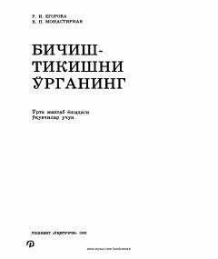

BOO'rta maktab o'quvchilari uchun bichish-tikish san'ati va kiyim modellashtirish asoslari.
Ushbu kitob o'rta maktab yoshidagi o'quvchilarga, xususan V-VIII sinf qizlariga tikish sirlarini o'rgatish uchun mo'ljallangan. Unda kiyim tarixi, liboslarni modellashtirish va konstruksiyalash, shuningdek turli detallarga ishlov berish usullari batafsil yoritilgan. Kitob o'quvchilarda nafaqat boshlang'ich bilim hosil qiladi, balki ularni kasbga yo'naltiradi va did bilan kiyinishga o'rgatadi.